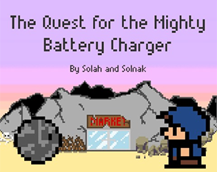
The Quest for the Mighty Battery Charger
My very first game made with my friend Lucas Martinez for Ludum Dare 39 in 2017.
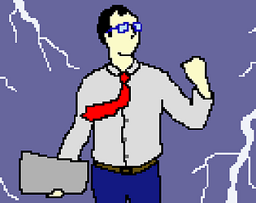
Hell's Business
A platformer I made for Ludum Dare 44. This is the first game I made alone in 48 hours.
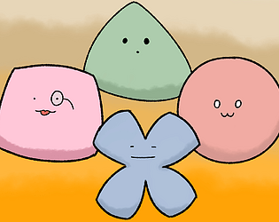
Les Quatre Formes
My second collaboration with Lucas Martinez. This is a small yet challenging RPG with cartoonish graphics and
humour made for a French game jam.
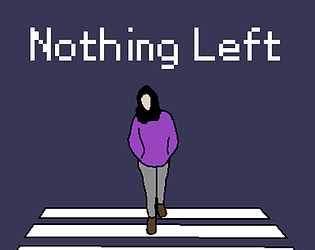
Nothing Left
A moody action-RPG with challenging platforming sections I made for Ludum Dare 45.
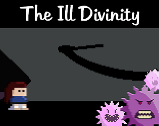
The Ill Divinity
A puzzle platformer I made for Ludum Dare 46. I worked quite hard on its game feel to make it enjoyable to play!
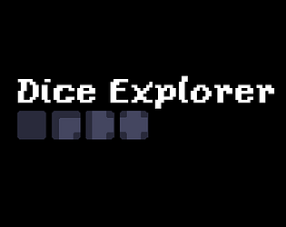
Dice Explorer
My first attempt at making a boardgame for Ludum Dare 48. This was the first time I recorded my guitar for a
game jam!
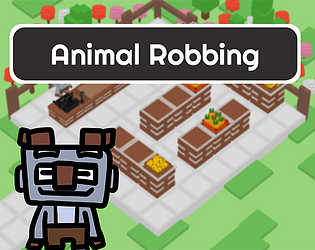
Animal Robbing
Third collaboration with Lucas Martinez. We tried to make a mix between a tycoon and an investigation game!
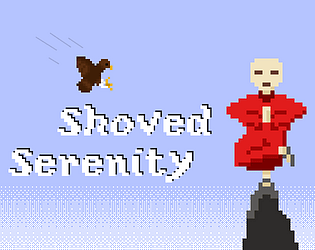
Shoved Serenity
An arcade game I made for Ludum Dare 49 with much humor. My first success with a 72nd rank in the jam (9th in
humor) which ended in the development of Monk on the Mountain!
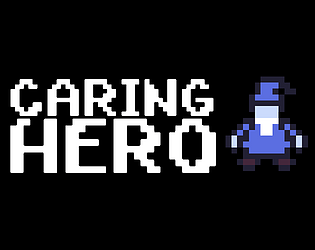
Caring Hero
A rogue-like game I made for Ludum Dare 50. It was quite ambitious and that was the first time I record my voice
for a game music!
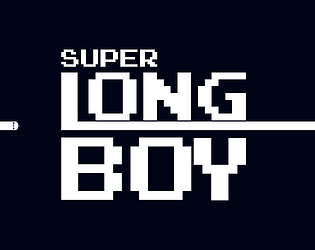
Super Long Boy
I first made Super Long Boy in 12 hours as an entry for a jam hosted by my friend BabaDesBois and it won the
jam!
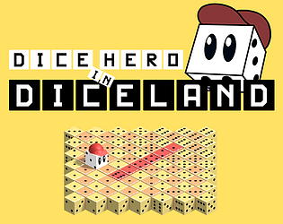
Dice Hero in Diceland
A puzzle game made with Axel Cardin and Lucas Martinez for the GMTK game jam 2022.
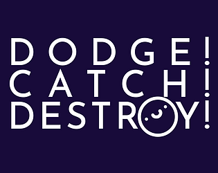
Dodge! Catch! Destroy!
A frantic twin-stick shooter where the goal changes every ten seconds for Ludum Dare 51. I really tried to make
it juicy and fun and I’m pretty proud of the stupid metal music I recorded fot it!